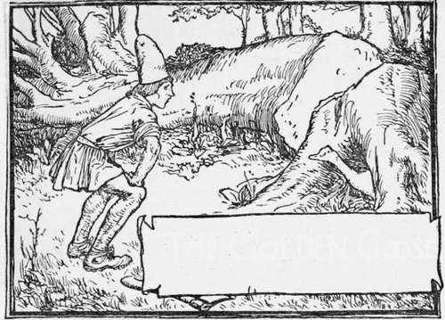
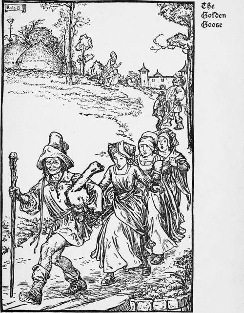
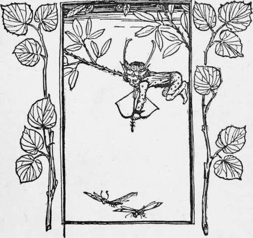

The Golden Goose
Description
This section is from the book "Household Tales by Brothers Grimm", by Brothers Grimm. Also available from Amazon: Household Tales by Brothers Grimm.
The Golden Goose
There was a man who had three sons. The youngest was called Dummling — which is much the same as Dunderhead, for all thought he was more than half a fool — and he was at all times mocked and ill-treated by the whole household.
It happened that the eldest son took it into his head one day to go into the wood to cut fuel; and his mother gave him a nice pasty and a bottle of wine to take with him, that he might refresh himself at his work. As he went into the wood, a little old man bid him good day, and said, " Give me a little piece of meat from your plate, and a little wine out of your bottle, for I am very hungry and thirsty." But this clever young man said, " Give you my meat and wine ? No, I thank you, I should not have enough left for myself: " and away he went. He soon began to cut down a tree; but he had not worked long before he missed his stroke, and cut himself, and was forced to go home to have the wound dressed. Now it was the little old man that sent him this mischief.
Next went out the second son to work : and his mother gave him too a pasty and a bottle of wine. And the same little old man met him also, and asked him for something to eat and drink. But he too thought himself very clever, and said, " The more you eat the less there would be for me : so go your way ! " The little man took care that he too should have his reward, and the second stroke that he aimed against a tree hit him on the leg ; so that he too was forced to go home.
Then Dummling said, " Father, I should like to go and cut wood too." But his father said, "Your brothers have both lamed themselves; you had better stay at home, for you know nothing about the business of woodcutting." But Dummling was very pressing; and at last his father said, "Go your way! you will be wiser when you have smarted for your folly." And his mother gave him only some dry bread and a bottle of sour beer. But when he went into the wood, he met the little old man, who said, "Give me some meat and drink, for I am very hungry and thirsty." Dummling said, "I have only dry bread and sour beer; if that will suit you we will sit down and eat it, such as it is, together." So they sat down; and when the lad pulled out his bread, behold it' was turned into a rich pasty: and his sour beer, when they tasted it, was delightful wine. They ate and drank heartily; and when they had done, the little man said, " As you have a kind heart, and have been willing to share everything with me, I will send a blessing upon you. There stands an old tree; cut it down, and you will find something at the root." Then he took his leave, and went his way.
Dummling set to work, and cut down the tree; and when it fell, he found, in a hollow under the roots, a goose with feathers of pure gold. He took it up, and went on to a little inn by the roadside, where he thought to sleep for the night on his way home. Now the landlord had three daughters; and when they saw the goose they were very eager to look what this wonderful bird could be, and wished very much to pluck one of the feathers out of its tail. At last the eldest said, " I must and will have a feather." So she waited till Dummling was gone to bed, and then seized the goose by the wing; but to her great wonder there she stuck, for neither hand nor finger could she get away again. Then in came the second sister, and thought to have a feather too; but the moment she touched her sister, there she too hung fast. At last came the third, and she also wanted a feather; but the other two cried out "Keep away! for Heaven's sake, keep away!" However, she did not understand what they meant. " If they are there," thought she, "I may as well be there too." So she went up to them; but the moment she touched her sisters she stuck fast, and hung to the goose, as they did. And so they kept company with the goose all night in the cold.
The next morning Dummling got up and carried off the goose under his arm. He took no notice at all of the three girls, but went out with them sticking fast behind. So wherever he travelled, they too were forced to follow, whether they would or no, as fast as their legs could carry them.
In the middle of a field the parson met them; and when he saw the train, he said, "Are you not ashamed of yourselves, you bold girls, to run after a young man in that way over the fields? Is that good behaviour?" Then he took the youngest by the hand to lead her away; but as soon as he touched her he' too hung fast, and followed in the train ; though sorely against his will, for he was not only in rather too good plight for running fast, but just then he had a little touch of the gout in the great toe of his right foot. By and bye up came the clerk; and when he saw his master, the parson, running after the three girls, he wondered greatly and said, " Holla ! holla! your reverence ! whither so fast ? there is a christening to-day." Then he ran up and took him by the gown; when, lo and behold, he stuck fast too. As the five were thus trudging along, one behind another, they met two labourers with their mattocks coming from work; and the parson cried out lustily to them to help him. But scarcely had they laid hands on him, when they too fell into the rank; and so they made seven, all running together after Dummling and his goose.
Now Dummling thought he would see a little of the world before he went home; so he and his train journeyed on, till at last they came to a city where there was a king who had an only daughter. The princess was of so thoughtful and moody a turn of mind that no one could make her laugh; and the king had made known to all the world, that whoever could make her laugh should have her for his wife. When the young man heard this, he went to her, with his goose and all its train; and as soon as she saw the seven all hanging together, and running along, treading on each other's heels, she could not help bursting into a long and loud laugh. Then Dummling claimed her for his wife, and married her; and he was heir to the kingdom, and lived long and happily with his wife.
But what became of the goose and the goose's tail, I never could hear.

Continue to:
Tags
fairy tales, children's stories, brothers grimm, household tales